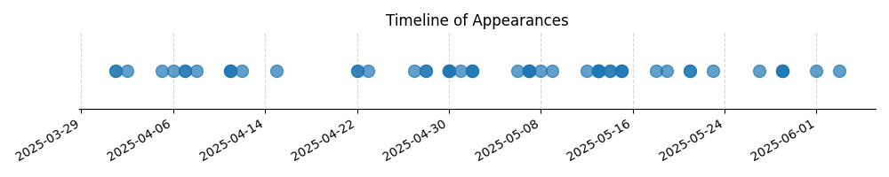

Kategorie: Meteorologie
Kondenzační jádra jsou drobné částice ve vzduchu (např. prach, saze, soli), na kterých se může srážet vodní pára a tvořit obláčky nebo mlhu. Průmyslové oblasti a velká města jsou významným zdrojem těchto částic v důsledku spalování fosilních paliv, dopravy a průmyslové výroby. Proto je koncentrace kondenzačních jader v těchto oblastech nejvyšší ve srovnání s relativně čistým ovzduším nad oceány nebo horami.

| Datum výskytu |
|---|
| 2025-06-03 |
| 2025-06-01 |
| 2025-05-29 |
| 2025-05-27 |
| 2025-05-23 |
| 2025-05-21 |
| 2025-05-19 |
| 2025-05-18 |
| 2025-05-15 |
| 2025-05-14 |
| 2025-05-13 |
| 2025-05-12 |
| 2025-05-09 |
| 2025-05-08 |
| 2025-05-07 |
| 2025-05-06 |
| 2025-05-02 |
| 2025-05-01 |
| 2025-04-30 |
| 2025-04-28 |
| 2025-04-27 |
| 2025-04-23 |
| 2025-04-22 |
| 2025-04-15 |
| 2025-04-12 |
| 2025-04-11 |
| 2025-04-08 |
| 2025-04-07 |
| 2025-04-06 |
| 2025-04-05 |
| 2025-04-02 |
| 2025-04-01 |